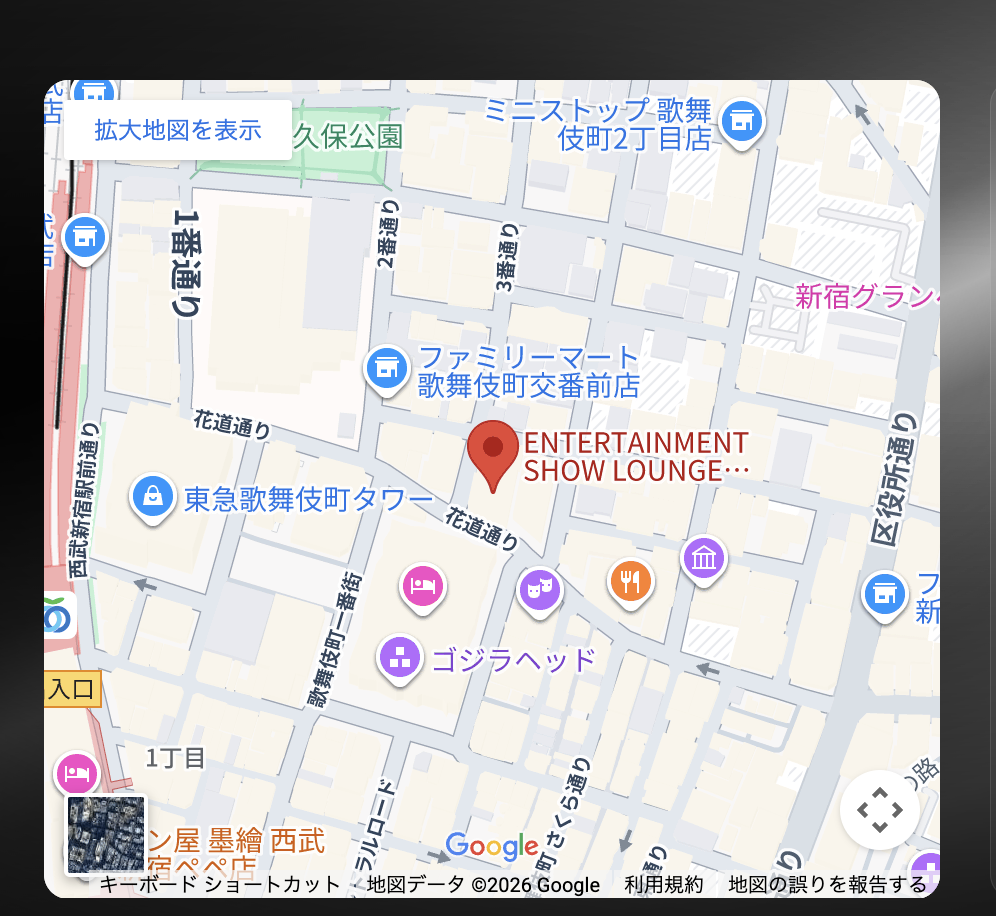

SP版調整
スマートフォン表示の全体的なレイアウト・サイズ・余白を最適化しました。
各セクションの文字サイズ、パディング、カード表示をモバイルに最適な形へ調整しています。
lg:hidden）FVにロゴ配置
ファーストビュー（FV）の中央にTHE 27 CLUBのロゴを大きく配置。
背景にはタイポグラフィアニメーションを敷き、ホバー時に明るくなる演出を追加。
サブタイトル「Welcome to Tonight's SHOWTIME」やキャッチコピーも配置しています。
- ロゴサイズを
w-[220px]に縮小（PCはw-[320px]） - サブタイトルやキャッチコピーのフォントサイズを
text-[10px]に調整 - スクロールインジケータの位置をSP用に調整（
bottom-[220px]）
/img/27logo-1-1.png を中央に配置SP版FVの news の位置調整
SP版のFV下部にあるニュース（NEWS / Instagram連携）カードスライダーの位置を調整。
PCとSPで異なるパディングを設定し、自動スクロール・ドラッグ操作・タッチスワイプに対応。
- SP版は
bottom: 8px（PCはbottom: 0）で位置を上に調整 - カード幅を
w-[260px]に縮小（PCはw-[300px]） - カード画像の高さを
h-[140px]に縮小（PCはh-[160px]）
TOPページタイトル縮小
各セクションタイトル（Explore、Floor Map、Access、About This Venue）のフォントサイズを
レスポンシブに設定。Playfair Display フォントによるイタリック・斜め表示のデザインを採用。

- SP:
text-3xl→ タブレット:text-5xl→ PC:text-7xl→ 大画面:90px - サブテキストも
text-xs（SP）〜text-3xl（大画面）で段階的に設定 - SP版では改行位置を専用テキストで調整
text-3xl md:text-5xl lg:text-7xl xl:text-[90px]rotate(±5deg) skewX(±5deg) の変形を適用text-xs md:text-xl lg:text-2xlExploreセクションを TIP から予約に変更
Exploreセクションの2番目のカードを「TIP（チップについて）」から「予約（RESERVE）」に変更。
リンク先を /reserve に変更し、タイトル・サブタイトルも予約向けに更新しました。
/チップについて → 変更後: /reserveフロアマップをクリックしたら画像部分に飛ぶようにする
フロアマップ上の座席エリアをクリックすると、下部の座席詳細情報（画像 + 料金表）部分へ
スムーズスクロールで移動するように実装。useRef と scrollIntoView を使用。

detailRef を座席詳細エリアに設定し、scrollIntoView({ behavior: "smooth", block: "start" }) で遷移isInitialMount ref使用）AccessセクションのURL変更
Accessセクション内のGoogle Maps埋め込みURLとYouTubeリンクを最新のものに更新。
YouTube CTAは @the27clubtokyo チャンネルへのリンクに変更しました。

https://www.youtube.com/@the27clubtokyo へリンクAbout This Venueセクション - サブページ作成
About This Venueセクションから遷移する4つの詳細ページを新規作成しました。
各ページにはヒーロー画像、説明文、ギャラリー、CTAボタンが含まれています。

- PC版の背景オーバーレイレイアウトから、SP版は縦並びレイアウトに変更
- 画像スライドショー → テキスト → 特徴リスト → CTAボタンの順序で表示
- 画像のアスペクト比を
16/10に調整し、下端にグラデーションを適用
作成したサブページ一覧

/about/events

/about/equipment

/about/mv-cm

/about/studio-rental
/about/events - イベント実績ページ: 過去のイベント一覧、ギャラリー、お問い合わせCTA/about/equipment - プロ仕様の照明・音響設備ページ: 設備詳細、仕様情報/about/mv-cm - MV・CM撮影の実績多数ページ: 撮影実績、利用事例/about/studio-rental - スタジオ貸し出しページ: レンタル情報、料金、予約